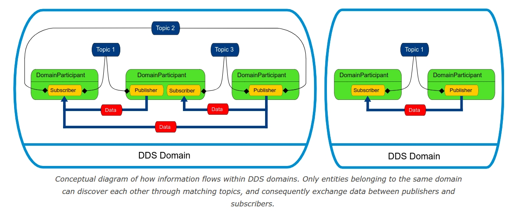
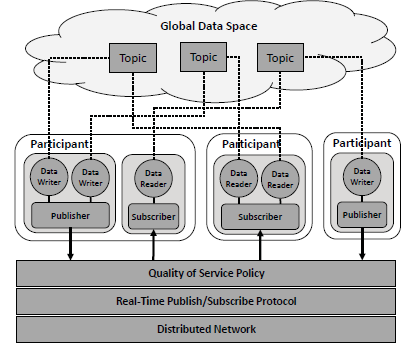

FastDDS关键概念
架构
架构图 
域（Domain）的概念  
数据中心收发模型（DCPS:Data Centric Publisher and Subscriber) 
Why need a publisher and subscriber
These publishers and subscribers don’t need to know about each other ahead of time; they discover each other dynamically at runtime. The data they share is described by a “topic,” and publishers and subscribers send and receive data only for the topics they are interested in. In this pattern, many publishers may publish the same topic, and many subscribers may subscribe to the same topic. Subscribers receive data from all of the publishers that they share a topic with. Publishers send data directly to subscribers, with no need for a broker or centralized application to mediate communications. (https://community.rti.com/static/documentation/connext-dds/6.0.1/doc/manuals/connext_dds/getting_started/cpp11/intro_pubsub_cpp.html)
Notes
Publisher 和 Subscriber 负责生成DataWriter&&DataReader，一个Publisher[Subscriber]可以绑定多个DataWriter[DataReader]。每一个DataWriter[DataReader]都会绑定到一个topic，同时可以指定对应的回调函数DataWriterListener[DataReaderListener]
数据监控——FastDDS Monitor
FastDDS Monitor Tutorial ## 原理 FastDDS库有一个内嵌的Participant，叫做Statistic Participant，包含在FastDDS的Statistic Module中。该模块不是默认编译的，因此需要在编译FastDDS的时候指明CMake选项。 实际上是用户开发应用时，在构建DomainParticipants阶段，如果通过某种方式指明了要将数据统计信息往外发送，则Statistic Module模块就会自动收集信息，然后往固定的topic发送监控数据。FastDDS Monitor通过这些内嵌的topic，可以监控数据的收发情况。
如何打开Statistics DataWriters 如何使用FastDDS Monitor
注意，如果编译FastDDS的时候打开Statistics Module模块，由于会发送额外的信息，所以会损失性能 > Consequently, by default, Fast DDS does not compile this module because it may entail affecting the application’s performance.(https://fast-dds.docs.eprosima.com/en/latest/fastdds/statistics/statistics.html)
Record && Replay
rosbag2 is a ROS 2 application that can be used to capture DDS messages and store them on an SQLite database which allows inspecting and replaying said messages at a later time.
- rosbag2可以将在Topic中传送的数据以SQLite的形式保存
- FastDDS没有自己的数据保存和回放工具，官方说明用的是ROS2的rosbag2包。要使用该包来记录和回放FastDDS的数据需要安装ROS2环境和rosbag2
- 由于rosbag2是用来保存ros2的message的，并不是FastDDS的官方工具，因此如果要用rosbag2回放，需要做较多的配置
Limitations
- 没有进程管理和启动工具。ROS/Apollo/XPilot都有属于自己的进程调度系统，可以直接按指定顺序启动多个进程并执行相关调度。
- 似乎无法实现像ROS的Service这种类似RPC的功能